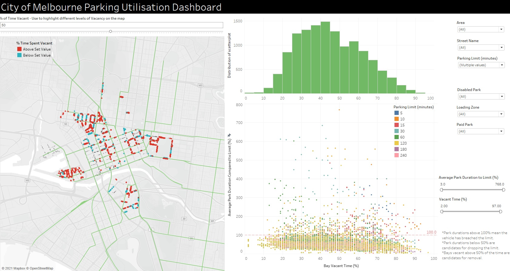

City of Melbourne Parking
This work was my capstone project for the inaugural Data Analytics course at General Assembly Australia. The problem statement was as follows;
The City wants to look at removing some on-street public parking to make the area nicer and more amenable to public transport and pedestrians, and at optimising their park bay restrictions to minimise breaches. They are asking for recommendations from you on whether and how they should do this.
Approach
pd.read_csv('../data/On-street_Car_Parking_Sensor_Data_-_2017.csv')
And then let the fun begin! 36M rows of data to clean and shape in python before it can be used. The method chosen to determine which bays could be replaced, was to look at the utilisation for the individual parking bays. Bays which spent longer vacant, could then be looked at as potential removal options. For the breaches, the average time spent in the bay compared to the limit was calculated.
Result
The end result was three part;
- A Jupyter notebook report with a detailed analysis of parking in the City of Melbourne for 2017.
- A Tableau dashboard to show parking bay usage.
- A presentation designed to explain the results to a general audience.
Below is a small extract from the notebook report, showing the areas in Melbourne where parking limits are optimal towards the left of the graph, compared to parking that has lower usage on average to the right. A hypothesis can be formed from this that: Drivers parking at Victoria Market are there to shop, so they pick up what they need and leave before the parking limit comes close to being breached, on average.
The dashboard is interactive and provides the user the ability to choose which areas/types of parking to focus on. The main function of the dashboard is to provide an insight into which areas have parking that are vacant below a threshold that the user sets.
External Links
To view the code and visuals for this project, please click the links below!